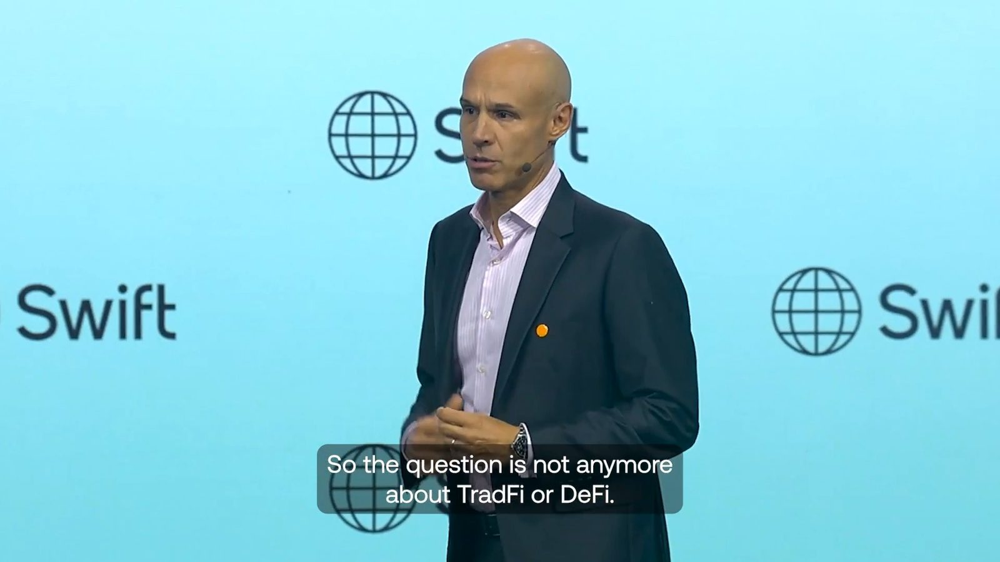
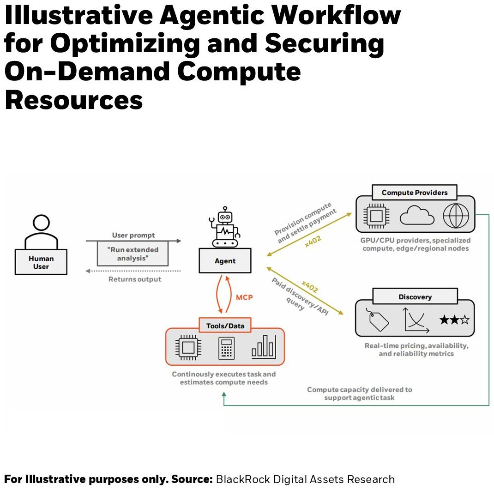
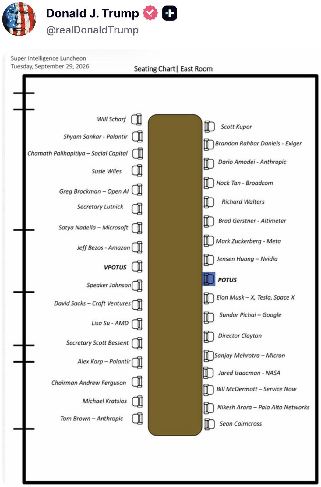
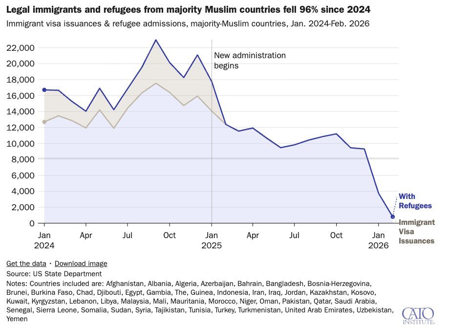
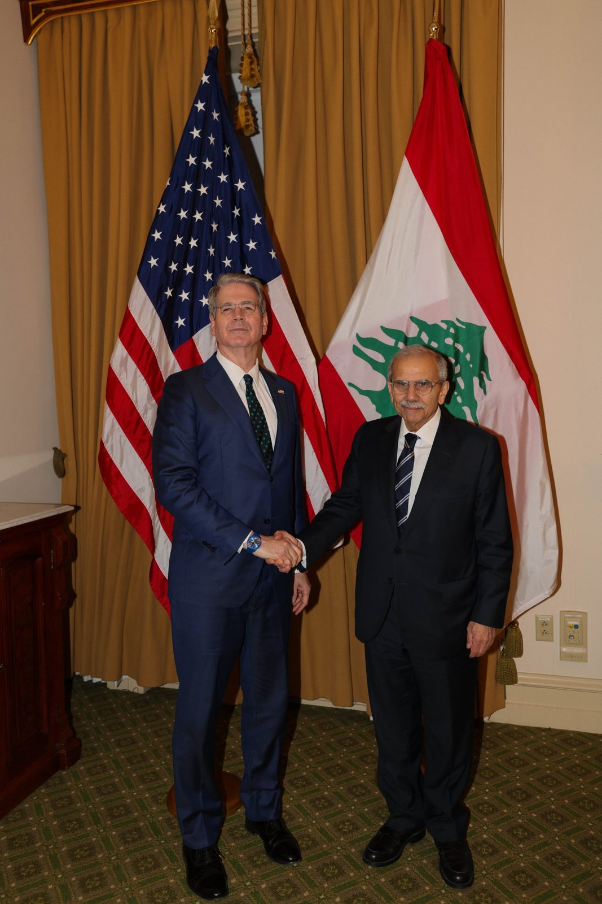
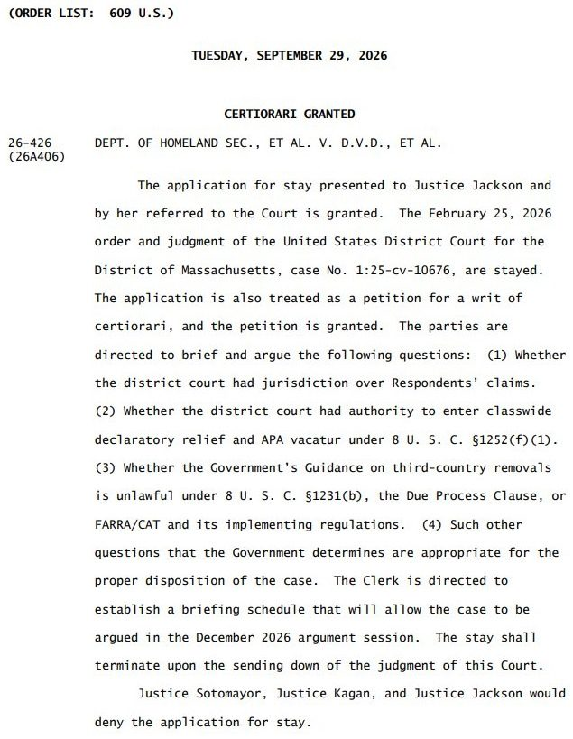

#BREAKING: Pete Hegseth to cut 20% of admirals and generals as part of a major Pentagon overhaul.
Speaking from the opening plenary at #Sibos 2026, Swift’s CEO, Javier Perez-Tasso, shared his vision for the future of regulated digital value.
"The question isn't TradFi or DeFi anymore. It's not either or. The Swift platform will allow you to move any form of regulated value, whether it is fiat or tokenised, at global scale."
That future is already taking shape. Today, Swift announced new work with the community to help make international payments as simple and intuitive as domestic ones, enabling people to pay across borders using familiar aliases such as mobile numbers and email addresses.

▶ Watch on XThis is the first time the XRP Ledger is publicly being integrated into core financial market infrastructure of this scale.
Brazil is the 10th largest economy in the world. CSD BR is one of two entities approved to operate by the Comissão de Valores Mobiliários (CVM) Brazil’s core clearing, settlement and securities depository infrastructures, with more than BRL 22 trillion in registered assets.
The journey starts with BTG Pactual fund shares, with a path toward bringing major parts of Brazil’s fixed-income market on to the XRPL.
CSD BR chose the XRPL because it was purpose built for financial use cases and can integrate with existing regulated infrastructure out of the box.
As & when this scales I believe it can be a larger growth opportunity for the XRPL than all other previous opportunities combined.
We’re excited to keep building alongside the exceptional CSD BR team. And today, XRPL is the only blockchain in the stack.
AI is machine-native intelligence and crypto is machine-native money. Both AI and digital assets translate real-world inputs into formats machines can use. Our latest research looks at why that connection could become increasingly important as AI evolves. https://www.blackrock.com/us/individual/literature/whitepaper/the-machine-native-economy.pdf

Tokenized stocks are up 369% so far in 2026 and have crossed $3 billion onchain for the first time.
Issued directly, SECZ has become the largest tokenized stock onchain and now represents more than 13% of the entire market.
Tokenize the World.
JUST IN: @MorganStanley sets up a Digital Asset Lab to test stablecoins, tokenization and DeFi applications, giving employees a dedicated facility to explore blockchain technology without risk to the bank's core systems.
NEW: @Citi expands Token Services to Japan and the UAE, now live in seven markets, enabling 24/7 cross-border liquidity movement for corporate clients.
DOE Issues RFP to Bolster Global Oil Supply Stability Through SPR Crude Exchange
WASHINGTON—The U.S. Department of Energy (DOE) today issued a Request for Proposal (RFP) for an exchange of up to 40 million barrels of crude oil from the Strategic Petroleum Reserve (SPR), continuing DOE’s execution of the 172-million-barrel release previously announced by President Trump in coordination with the International Energy Agency (IEA) member nations’ overall 400-million-barrel commitment.
“With today’s actions, the United States continues to lead the coordinated efforts to stabilize oil markets for the benefit of Americans and people around the world,” U.S. Secretary of Energy Chris Wright said. “While the United States and Japan are delivering on their commitments, several European member countries have released only a fraction of the crude oil and petroleum products they pledged. We urge every member country to fulfill its commitments. Thanks to President Trump, these exchanges will also ensure America’s Strategic Petroleum Reserve continues to be refilled, while saving taxpayers more than $3 billion.”
Thanks to President Trump, DOE has advanced a series of large-scale SPR exchange solicitations at record speed. These actions have moved critical crude oil supplies into the market to address short-term supply disruptions and bolster energy security for the United States and its allies.
The crude oil will originate from the SPR's Big Hill and Bryan Mound sites. This action builds on the Department’s five previous solicitations that collectively awarded more than 133 million barrels across four completed exchanges. DOE’s earlier exchanges demonstrated the SPR’s ability to rapidly deliver crude under emergency authorities while achieving a 25 percent premium in returned barrels—expanding the reserve and saving taxpayers billions of dollars. Deliveries under awarded exchanges are scheduled for November and December 2026.
Under DOE’s exchange authority, participating companies will return the 40 million borrowed barrels with additional premium barrels, ensuring immediate market supply while increasing the SPR’s long-term inventory at no cost to taxpayers.
Bids for this solicitation are due no later than 11:00 A.M. Central Time on Tuesday, October 6, 2026.
For more information on the SPR, please visit DOE’s website.
.@finkd on today's White House Accord on developing Super Intelligence safely: "We want to give the American people and our customers confidence that the technology works in the way we intended."

THE UNITED STATES GOVERNMENT JUST PUT THIS ON NATIONAL TELEVISION DURING THE NFL GAMES.
“This is the final battle with you at my side. We will demolish the deep state. We will expel the warmongers from our government. We will drive out the globalists. We will cast out the communists, Marxists, and fascists. We will throw off the sick political class that hates our country. We will rout the fake news media, and we will liberate America from these villains once and for all.”
PAID FOR BY THE U.S. GOVERNMENT.
Not a campaign. Not a PAC. The actual United States government.
They’re not working us over anymore. We’re working them over.
This is the final battle. And it’s live on national TV.
Legislation creating a national standard for rounding cash transactions to the nearest nickel won approval in the Senate and now heads to President Donald Trump for his signature.
Fact Sheet: President Donald J. Trump Streamlines Access to Government Services Through America dot gov
From CATO: legal immigration from Muslim nations has been cut 96%.
While legal immigration in general is down, Trump has practically halted Muslim migration and completely ended Muslim refugee resettlement.
‘Annual Muslim immigration may be the lowest in over 30 years.’
Legal Immigration from Majority-Muslim Nations Was Cut 96% Since 2024

DHS watchdog finds vetting errors in 40% of files for migrants who entered US during Biden’s botched Afghanistan withdrawal
#BREAKING: ICE agents hit hospitals, airports, schools, and truck stops in nationwide surge.
Today, I met with Lebanese Prime Minister @nawafsalam and Finance Minister @JaberYassine to discuss the need for decisive action to disrupt Iranian and Hizballah financial networks, and the importance of key financial sector reforms to restore confidence in Lebanon’s banking system.

Now for the second time, SCOTUS just granted our stay in conducting all third-country removals of illegal aliens. Again, this is entirely lawful and a critical tool for immigration enforcement. Unlike the lower court, SCOTUS waited to hear from both sides before making the decision.

Today, under Operation Economic Outcast, Treasury’s Office of Foreign Assets Control sanctioned 10 individuals and entities in multiple jurisdictions that have procured weapons and weapons components for Iran’s Ministry of Defense and Armed Forces Logistics (MODAFL), the entity responsible for weapons research, production, and acquisition for Iran’s armed forces. MODAFL also oversees organizations engaged in the development of Iran’s ballistic missiles and unmanned aerial vehicles.
Opinion: For private schools, tax-exempt status is becoming another enforcement tool in the federal government's heightened scrutiny of race-conscious practices. Those that move first and most carefully will be best positioned when the final rule arrives.
Office of Personnel Management uncovers $500M in fraud and waste in federal health benefits programs